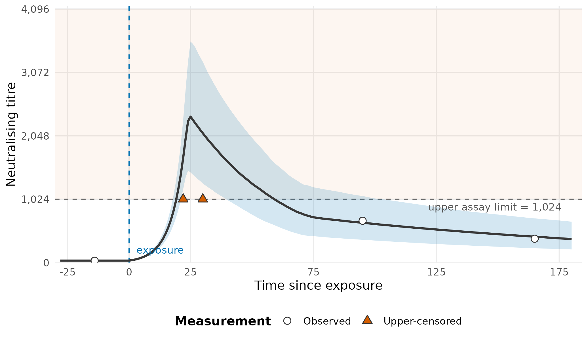

Assays often report only that a response lies below a lower limit or above an upper limit. A censored value is not treated as though its unknown true value were exactly equal to the boundary.

An illustrative Bayesian reconstruction on the natural titre scale. The line is the latent posterior median and the ribbon is its 95% credible interval. Upward triangles are upper-censored measurements: the assay reports 1,024 even though the latent response can lie well above that limit. The vertical dashed line marks exposure.
The reconstruction uses 800 reproducible draws of plausible kinetic parameters around values informed by the package defaults. Each curve is evaluated on the model’s log2 scale, transformed draw-by-draw to the natural scale, and then summarised by its median and 2.5%/97.5% quantiles. It is explanatory rather than the result of fitting Stan. The horizontal line at 1,024 is the assay ceiling: the upper-tail likelihood allows the latent response to exceed it instead of capping the curve there. Lower censoring uses the analogous lower-tail likelihood but is omitted from this focused illustration.
Supply assay limits
library(epikinetics)
dat <- doc_delta_data()
prepared <- prepare_epikinetics_data(
dat,
lower_limit = 5,
upper_limit = 2560
)
table(epikinetics_data(prepared)$censoring)
#>
#> left none right
#> 126 2003 126lower_limit and upper_limit independently
accept:
- one value for every observation;
- a row-level numeric vector;
- a named vector with one value per biomarker; or
- the name of a numeric column in the input data.
NA means that a limit does not apply to that row. Limits
are supplied on the same scale as the input response and transformed
consistently during preparation.
Without an explicit censoring column, values at or below
the lower limit are classified as left-censored and values at or above
the upper limit as right-censored. With no limits, every value is
uncensored. If the laboratory records status directly, pass labels
"none", "left", or "right"
(numeric 0, -1, and 1 are also
accepted).
Likelihood contributions
An uncensored row contributes a Normal density on the fitted log2 scale. A left-censored row contributes the probability of a future measurement being at or below its lower limit; a right-censored row contributes the probability of being at or above its upper limit. Datasets may use neither, either, or both types without changing models.
Preparation checks that each censored row has the required finite limit and that recorded values/statuses are compatible. Inconsistent rows produce a row-specific R error before Stan is called.
The censoring limits remain attached to prepared data and predictions. Plot methods draw restrained dashed lines in the correct panel/biomarker context and use downward/upward triangles for censored observations.
See Data for response transformations and Kinetics model and statistical structure for the exact likelihood.